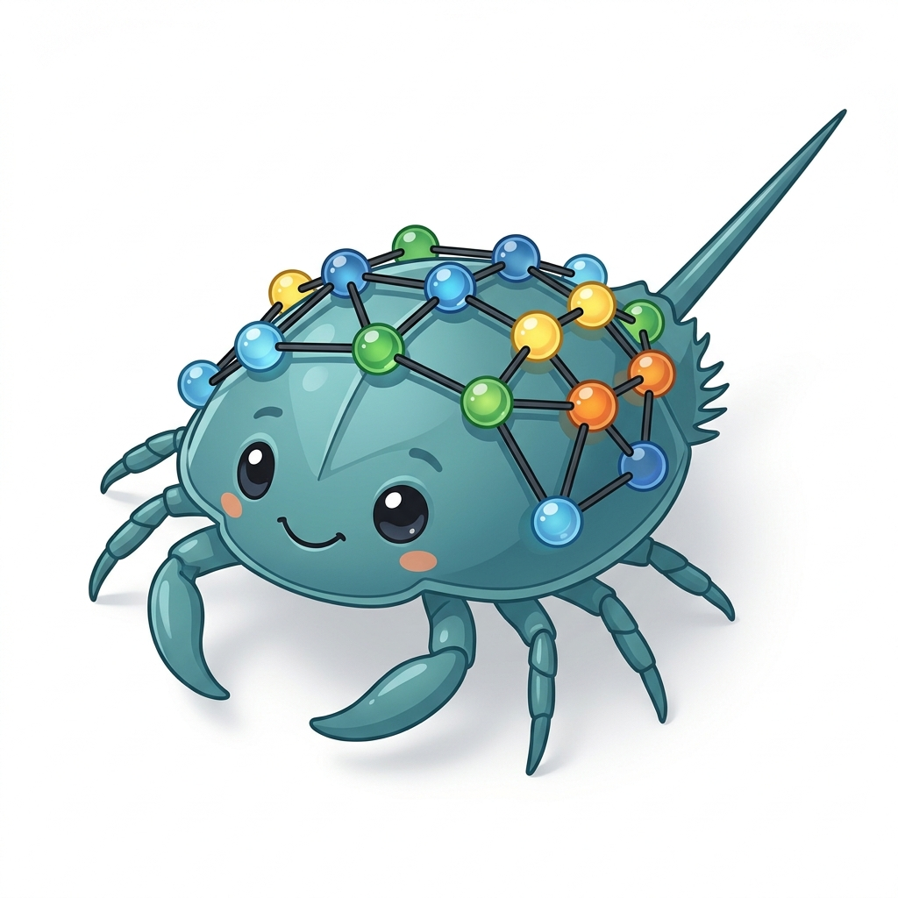

Branch the idea. Keep the code.
Turn ordinary .py files into reusable steps. Your graph lives in a separate .lmg file, so your source stays readable and ready for Git.

limulus. Get startedA visual workspace for Python
Your next idea doesn’t have to start from scratch. Connect Python files, branch into possibilities, and see where every “what if” takes you.
Your Python. Your machine. A little more possibility.
FOLLOW YOUR CURIOSITY
Try a different model without losing your first idea. Each complete path becomes its own universe, with independent Python state.
load.pyprepare.pymodel_a.pymodel_b.pyevaluate.pyExplore the paths above. This is an interactive illustration, not a running Python session.
LESS FRICTION. MORE EXPLORATION.
From the first question to the next discovery, keep your ideas connected and your code familiar.
Turn ordinary .py files into reusable steps. Your graph lives in a separate .lmg file, so your source stays readable and ready for Git.
Each universe runs in its own persistent Python process. Share live variables within a path and explore alternatives concurrently.
Inspect text, pandas tables, and Matplotlib plots. Filter results by universe or node to see which idea led where.
A CLOSER LOOK
Build in your browser or alongside your source in VS Code. The same visual approach, wherever you feel at home.
YOUR NEXT EXPERIMENT STARTS HERE
Pick your workspace. Bring your Python.
See what happens when you take both paths.